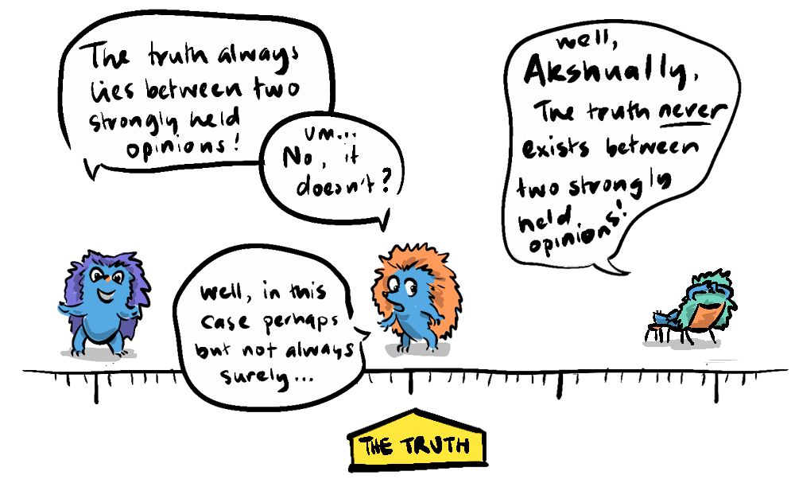
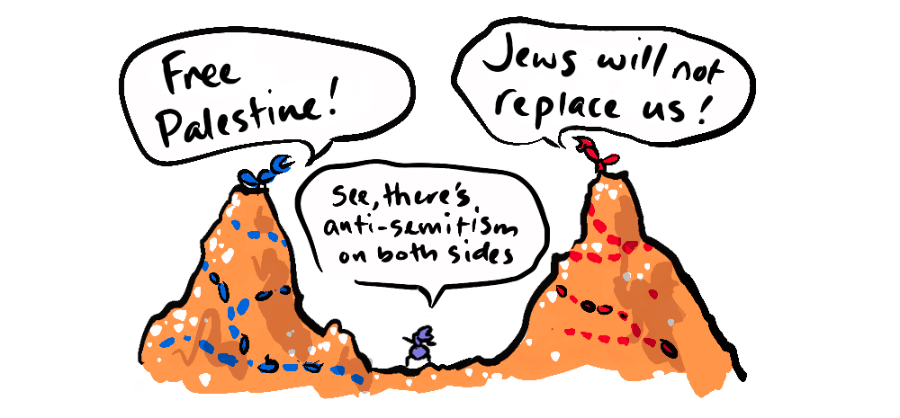

The ability to fairly consider two opposing viewpoints is the primary factor in critical thinking. While true objectivity is never achievable, humans have come up with methods to over-come our biases and to better evaluate claims from the scientific method to the fairness doctrine. But at what point does a viewpoint become disqualified from being elevated to the status of valid criticism, or equal counterpoint? Can one side simply be wrong, and we move on to discussing which of the right answers are best?

In the quest for a fair and informed society, the notion of presenting both sides of an argument has been deeply ingrained in our understanding of balance. This principle was institutionalised in the US with the introduction of the Fairness Doctrine in 1949.
“The Fairness Doctrine was rooted in the notion that the broadcast spectrum is a public resource, and those who are licensed to use it have an obligation to serve the public interest by facilitating informed debate.”
—Encyclopædia Britannica
While well-intentioned, the doctrine inadvertently codified the fallacy of both-sidesism, where equal representation is given to opposing viewpoints regardless of merit or evidence. This has had lasting implications on public discourse, science communication, and the health of our democracy.
Both-sidesism often relies on two logical fallacies: equivocation and false equivalence. Equivocation uses ambiguous language to mask the truth, while false equivalence presents two unequal things as equal.
We see false equivalence playing out in the political arena when commentators claim there is "radicalism" on both sides in reference to radical woke leftists quibbling about pronouns in relation to a mainstream right-wing presidential candidate promising to use the military against the "enemy within".
Presently, radical left-wing ideas are simply not comparable to radical right-wing ideas. A recent study in Nature found that...
... conservatives were less supportive of political equality and legal rights and guarantees and more willing to defect from democratic "rules of the game" and vote for anti-democratic candidates, even after adjusting for political extremism.
—Débora de Oliveira Santos & John T. Jost
So, by implying that extreme views are equally distributed across the political spectrum, both-sidesism masks real threats to democratic values.
Equivocation is often used to undermine scientific discourse, the term 'theory' refers to a well-substantiated explanation based on evidence. However, in casual conversation, "theory" might imply a mere guess. This equivocation allows scientifically unsupported ideas like intelligent design to be presented alongside evolution as equally valid theories. We live in a democracy, where everyone gets a vote, but science does not operate that way, it is structured so as to find the most likely explanation, not the most popular one.
Philosopher Karl Popper emphasised the importance of falsifiability in distinguishing science from non-science. A falsifiable claim is one where, if it is wrong, there is a clear way to show that it is false. So, a claim that there is not a hippopotamus in the office can easily be falsified if there is actually a hippopotamus in the office. Where as a claim that there is an intelligent being that exists outside of time and space is not falsifiable.
"In so far as a scientific statement speaks about reality, it must be falsifiable; and in so far as it is not falsifiable, it does not speak about reality."
—Karl Popper (The Logic of Scientific Discovery)
Popper's philosophy underscores that not all ideas hold equal validity. And yet, scientific theories are constantly updated because the debate moves on to more detailed questions within the scope of reasonable positions, as to which is best. Scientific theories gain acceptance through rigorous testing and the ability to be proven wrong, a process that unfounded opinions do not undergo.
To understand the implications of both-sidesism, we can turn to game theory, specifically non-zero-sum games.
In my Non-Zero Thinking for Kids workshop, the first thing I noticed was that the kids had a very zero-sum conception of fairness, which is understandable, they are taught that fairness means everyone getting the same amount—and if anyone gets more or less the game is unfair. When dividing up lollies, they would even give back surplus lollies that were not divisible, in order for everyone to get the same.
At the same time, when exposed to competitive non-zero-sum games like the prisoner's dilemma, many utilised the same short-term strategies as adults, defecting to get individual advantage at the expense of future cooperative gains.
But when I introduced the class to a public goods game where individuals choose how much to contribute to a common pool that benefits all, they learned a new lesson. If everyone contributed, the group maximised its benefit. However, if individuals acted selfishly and withheld their contribution, the common good suffered. It was impressive how quickly kids cottoned on to the benefits of mutual cooperation.
Applying this to public discourse, when media outlets and individuals prioritise truthful, evidence-based information (contributing to the common pool), society as a whole benefits. However, when both-sidesism elevates unsupported or false viewpoints (withholding contribution), it undermines trust.
But, we have seen, particularly in the US, the increasing polarisation of news coverage, doesn't the fairness doctrine protect against this?
When Reagan, in 1987, repealed the Fairness Doctrine, rather than solving the issue of both-sidesism it opened the flood-gates to partisan news outlets who could then exploit a public indoctrinated with the philosophy of both-sidesism, to deliver partisan messages under the guise of being "Fair and Balanced" without the legal requirement to be so—allowing the presentation of fringe or debunked perspectives alongside facts.
But something interesting has happened in the Trump era, as he has shown himself to be an increasingly dangerous person, pining for "Hitler's generals", being "not a dictator, except for day one", promising "you won't have to vote anymore", threatening to lock up his political opponents, and referring to the people around Kamala Harris as "scum", "garbage" and "the enemy within". The mainstream media, in the name of being honest about a clear and present danger, have finally dispensed with both-sidesism—and this is not a bad thing.
Where the choice of feigning balance on right-wing outlets like Fox has been motivated by a need to sell bad ideas to the public, and now to sane-wash the ramblings of a mad-man, the switch to partisanship on the left has been motivated by a commitment to truth, and being on the right side of history, over superficial balance.
Ideally, democracy mitigates imbalances, meaning that a balanced approach to the news is warranted. But America is not an ordinary democracy, it has an Electoral College which was structured, during the time of slavery, and preserved the political power of slave states, in a way that consistently benefits Republicans. The popular vote in 2000 Bush v Gore went to Gore, and in 2016 Trump v Clinton went to Clinton by almost 3 million votes, meaning that, in an ordinary democracy, no new Republican would have been elected since George Bush Sr in 1988. Of course Republicans would have been forced to respond to such losses by appealing to the centre to be competitive, thereby mitigating radicalisation.
As it stands though, with the Electoral College advantage, Republicans are able to put less qualified, less capable and increasingly more radical candidates forward, while democrats are forced to appeal to the centre and even the centre right, in order to remain competitive, leaving them in a constant battle on two fronts.

This Republican advantage means that those candidates have an outweighed opportunity to install Supreme Court justices, and because they are radical candidates they are more likely to install radical judges. This also has a psychological effect on the population, giving a false impression of where the "centre" is.
Despite this full-throated calling out of Trump's demagoguery, heading into potentially the most consequential election in modern US history, the razor's edge polls suggest that the doctrine of both-sidesism is alive and well in the population. This manifests in a profound double standard, which I've (conservatively) mapped on to a payoff matrix.
This imbalance, in turn, informs a new generation of media about where "balance" lies.
When independent online personalities like Sam Harris, Joe Rogan or Lex Fridman (believing they are on the left) attempt to reach "across the aisle" to the right (to achieve balance) to the Ben Shapiros, or the Jordan Petersons, or in the case of Joe and Lex, to Trump himself, they are in fact merely contributing to a centre-right online media environment. For the public this then reinforces the inaccurate centre, which informs norms—allowing them to shift right in a way that allows for mass radicalisation.
To address the challenges posed by both-sidesism, we must recalibrate our understanding of fairness. This involves:
- Valuing Expertise and Evidence: Recognise that informed opinions, grounded in evidence and rigorous analysis, deserve greater weight in discussions that impact society.
- Encouraging Critical Thinking: Promote education that emphasises critical thinking skills, enabling individuals to discern between credible information and unfounded claims.
- Collaborative Problem-Solving: Adopt a non-zero-sum approach to public discourse, where collaborative efforts lead to mutual benefits, much like in thePublic Goods Game.
- Popular Vote: Do away with the Electoral College, which is what makes both-sidesism so pernicious, because expecting balance when the system is out of balance simply distorts our conception of what balance is, by shifting the centre.
Unfortunately, in the US these solutions are not being exercised on both side. This is due to the radicalisation on the mainstream right enabled by the pernicious partnership of both-sidesism with the Electoral College. So, this is where I reveal (if it's not already obvious) that I am not an impartial party in all this.
There is one candidate, Kamala Harris, who cares about expertise (particularly her economic plan, which is lauded by experts), critical thinking and collaboration (her will to work together on the border with Republicans).

On the other hand we have a very dangerous candidate in Donald Trump who, along with his fascistic rhetoric, denies expert opinions on tariffs, deals in highly uncritical thinking "they're eating the cats, they're eating the dogs" and shows no interest in collaboration, even with establishment Republicans, let alone Democrats. He has made it clear who he is, and who he serves (himself).
The Fairness Doctrine, though rooted in noble intentions, inadvertently contributed to the entrenchment of both-sidesism by codifying equal representation without consideration of merit. In an age where misinformation can spread rapidly, it's imperative to prioritise truth and evidence over an oversimplified, or even childish notion of balance, and call it out when one side has become truly dangerous.
I am not a US citizen, so cannot vote in this globally significant election in a few days time. For any US citizens reading, please spare a thought for the rest of us and for the future of the world and be on the right side of history.